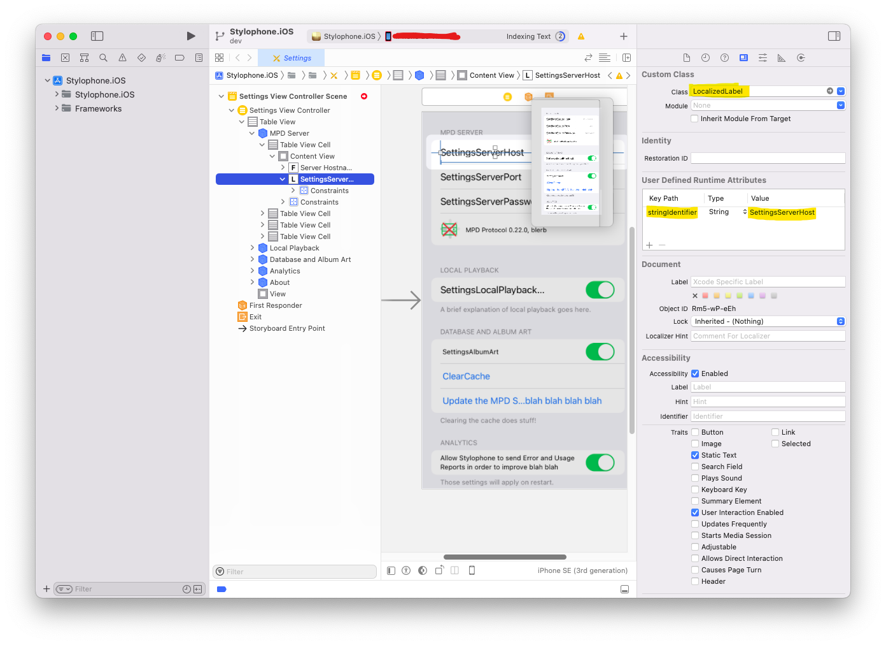

Apple recently removed their page about Interface Builder from the Xcode documentation, likely as part of their push to dogfood SwiftUI to as many people as possible.
But I like Interface Builder! Hell I'll go one beyond and even say I like Auto-Layout! ...When it works.
Keeping UI code separated from your main logic is always a sound architectural choice for me, and while I wish you could edit nibs/storyboards by hand like with XAML, I'll still take IB and its visual designer over writing new UIButton() a thousand times.
Stylophone's iOS port mostly uses Storyboards for its UI, but much of the logic code is written in .NET, and shared with its Windows/UWP brethren.
That includes localized text! I use .resx files to hold the localizations, which is very much a .NET concept.
So, here's a fairly easy way to use the interop magic in Xamarin/Microsoft.iOS to directly reference your localization keys in Interface Builder and have it just work.
Subclassing UILabel
What we're going to do is simply pull the localized text once the view is loaded and assign it to all the UILabels objects in the view, but:
- in an automated fashion instead of having to write additional view code
- relying only on data from Interface Builder(IB).
One of the nice things IB allows you to do is set User Defined Runtime Attributes on any control you lay out, which are basically arbitary key/value pairs.
If we rely on that, it becomes quite easy to write a UILabel subclass that looks in those attributes for a localization key, and then asks .NET about it:
using System;
using Foundation;
using Stylophone.Localization.Strings;
using UIKit;
namespace Stylophone.iOS.Helpers
{
// Make this subclass visible from the UIKit side of things
[Register(nameof(LocalizedLabel))]
public class LocalizedLabel: UILabel
{
// This is our runtime attribute - name can be whatever you want!
[Export(nameof(stringIdentifier))]
public NSString stringIdentifier { get; set; }
public LocalizedLabel(IntPtr handle) : base(handle)
{
}
void ReleaseDesignerOutlets()
{
}
public override void AwakeFromNib()
{
base.AwakeFromNib();
// Use the text set in IB to find the matching property.
// Set the identifier in "User Defined Runtime Attributes".
var identifier = stringIdentifier ?? "AppDisplayName";
// Get the property value to have the localized string.
Text = Resources.ResourceManager.GetString(identifier);
}
}
}
The Resources class here is the classic static class generated by ResXGenerator, which you should normally have if you store your localizations that way.
Using the subclass in Interface Builder
Once your subclass is created, you should be able to define it as a "Custom class" for all the UILabels you want localized.
From that point on, all that's left to do is add your localization key as a runtime attribute under the stringIdentifier key:

And you're done!

Notes
This approach obviously only works if your text is in a UILabel -- While that should cover 95% of your app, it's likely you'll still have to hodgepodge some view code for more esoteric text placement, like in UITableView headers:
// Localization not covered by LocalizedLabel
public override string TitleForHeader(UITableView tableView, nint section)
{
return (int)section switch
{
0 => Resources.SettingsServer,
1 => Resources.SettingsLocalPlaybackHeader,
2 => Resources.SettingsDatabase,
3 => Resources.SettingsAnalytics,
4 => Resources.SettingsAbout,
_ => "",
};
}
As a final note, keep in mind that ResX lookup will use the .NET Culture system, which has slightly different language combinations than iOS/macOS.
See this post for more information and how to declare languages in your Xamarin app.
Thanks for reading!